01最新情報
一覧を見る〉結果報告
ブログ更新
動画公開
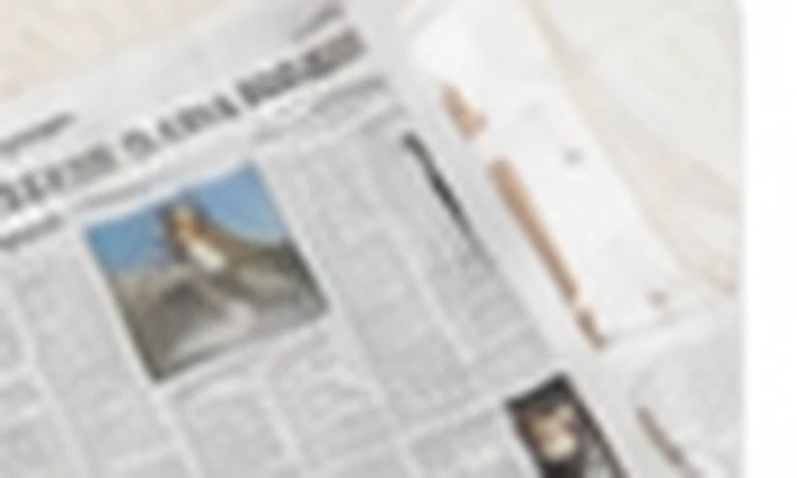
メディア掲載
写真追加
02プロフィール
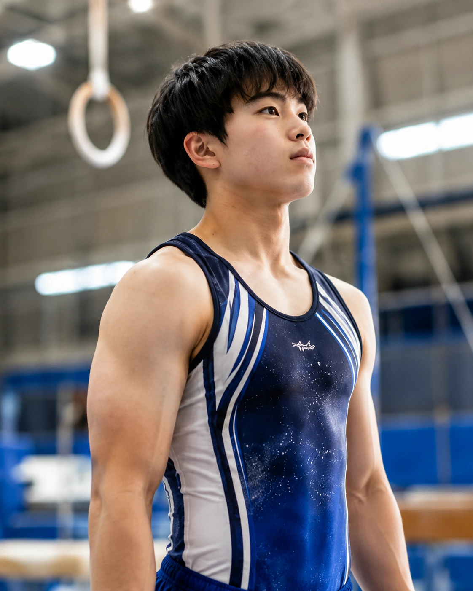
| 名前 | 山内 凛（やまうち りん） |
|---|---|
| 生年月日 | 2013年4月12日 |
| 出身地 | 愛知県 |
| 所属 | KANO Gymnastics Club |
| 得意種目 | つり輪・平行棒 |
| 競技歴 | 6年 |
| 主な成績 | 県大会入賞、東海大会出場 |
|---|---|
| 目標 | 全国大会での入賞 |
| 好きな技 | 倒立・力技 |
| 尊敬する選手 | 内村航平 |
03試合情報
2026年7月20日
愛知県ジュニア体操競技大会
会場：〇〇体育館出場種目：床、跳馬、鉄棒
結果：出場予定
2026年8月18日
東海ジュニア選手権
会場：名古屋市総合体育館出場種目：床、あん馬、鉄棒
結果：出場予定
2026年9月6日
全国ジュニア体操競技大会
会場：東京体育館出場種目：個人総合
結果：調整中
04成績・実績
| 年度 | 大会名 | 種目 | 順位 | 得点 |
|---|---|---|---|---|
| 2026 | 東海ジュニア選手権 | 鉄棒 | 3位 | 13.800 |
| 2026 | 愛知県ジュニア体操競技大会 | 床 | 2位 | 13.950 |
| 2025 | 東海ジュニア選手権 | 床 | 4位 | 13.700 |
| 2025 | 全国ジュニア体操競技大会 | 個人総合 | 10位 | 78.250 |
| 2024 | 愛知県ジュニア体操競技大会 | 鉄棒 | 1位 | 13.850 |
🏆
表彰歴
県大会 優勝 2回
県大会 準優勝 1回
県大会 3位 2回
🏅
代表歴
愛知県選抜選手
（2025年度）
📋
検定・級
男子体操競技
1級取得
審判員資格 4級
05写真ギャラリー
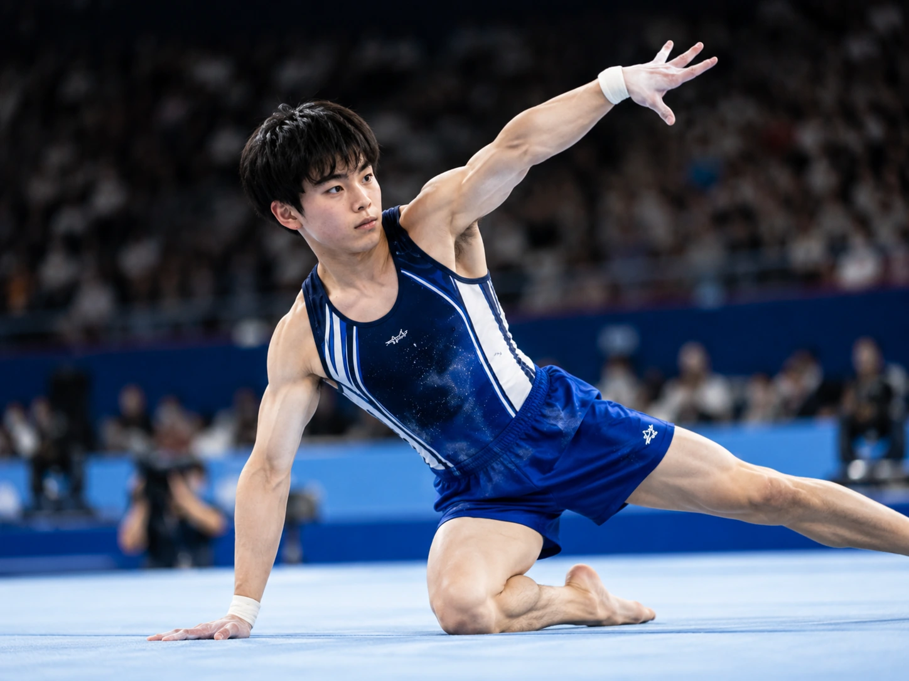
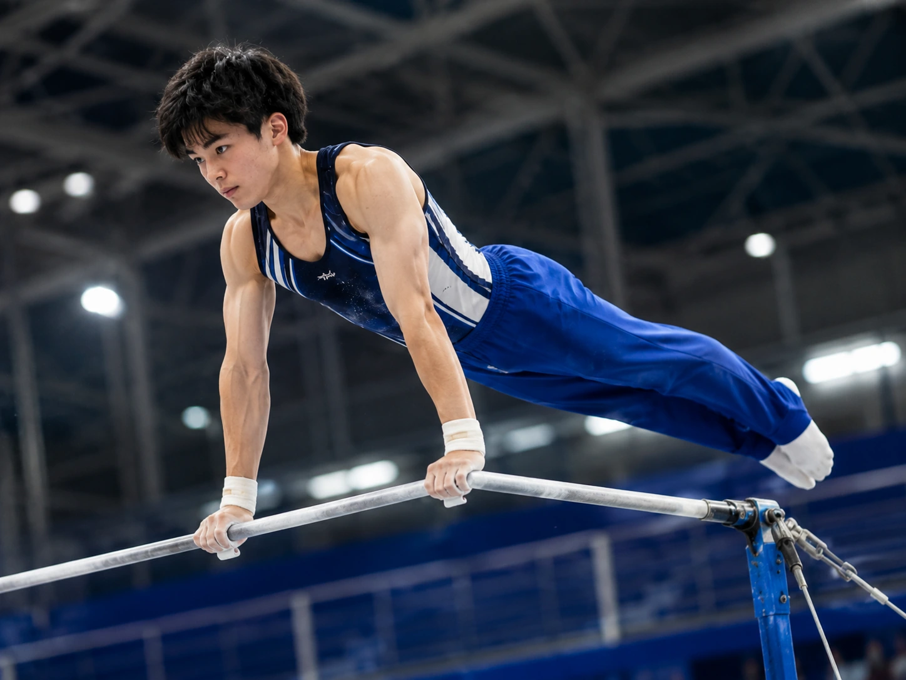
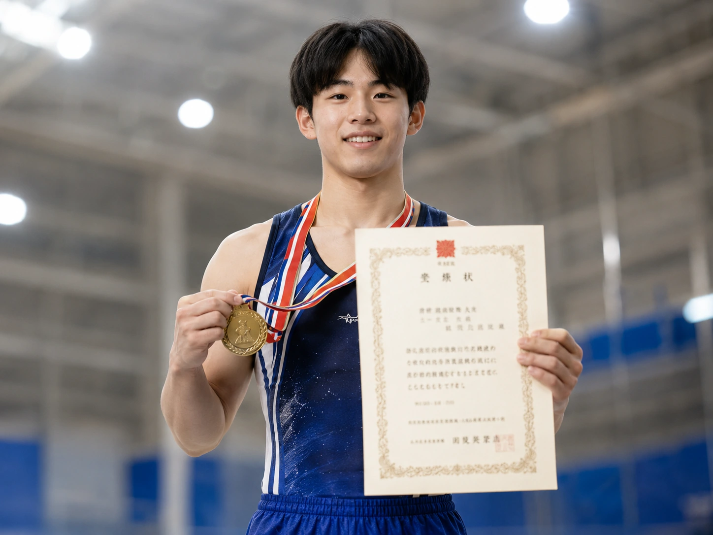
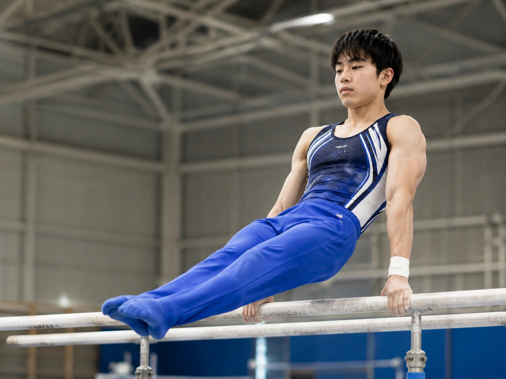
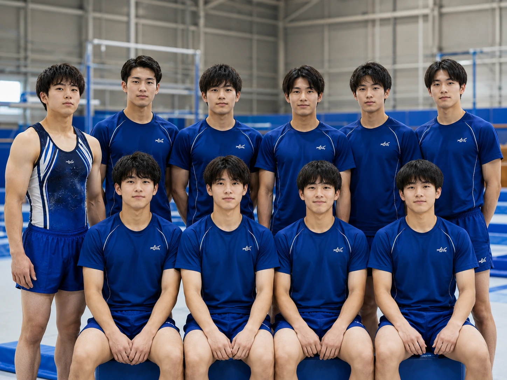
06動画
▶1:24
試合演技
倒立
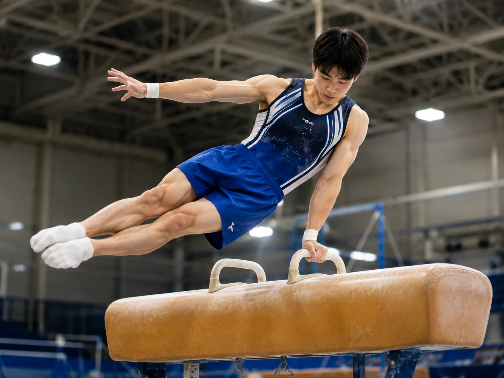
▶1:02練習動画
バク転
▶1:36
技の成長記録
鉄棒
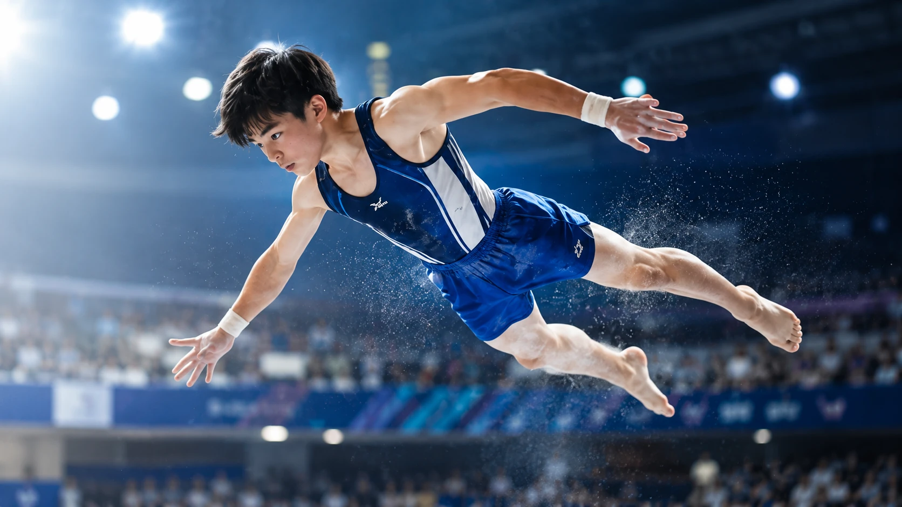
▶1:001分ハイライト
跳馬
07ブログ
大会を終えて感じたこと
大会報告 日記今回の大会で得た経験や課題、次に向けての気持ちを書きました。
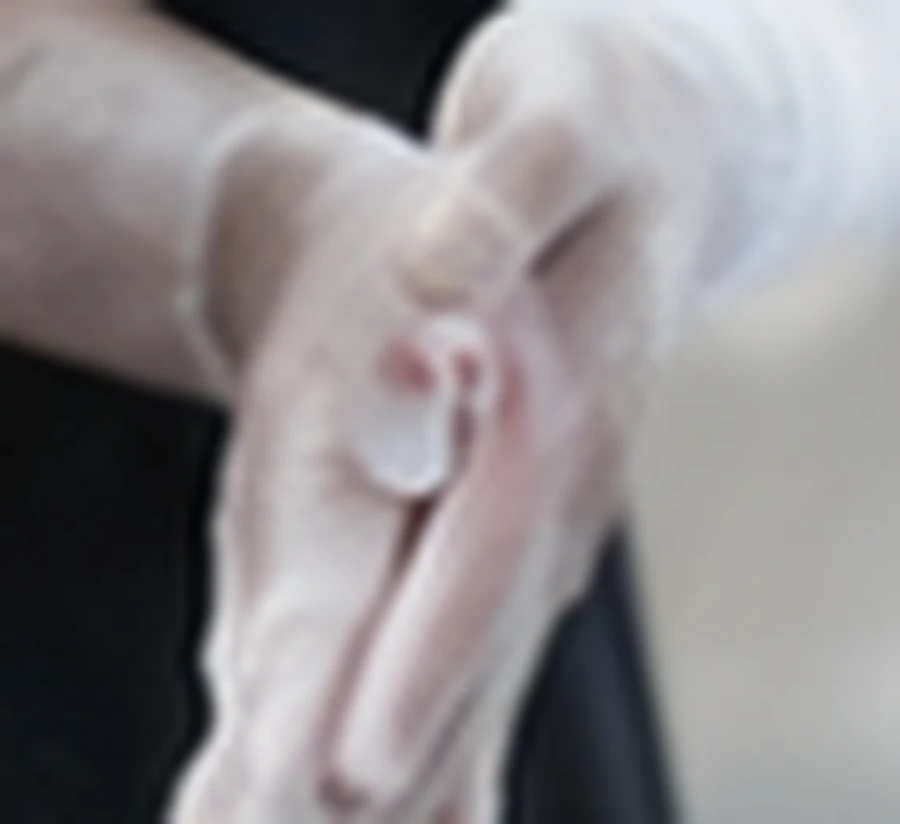
今日の練習で意識したこと
練習 技術鉄棒のスイングや着地の安定を上げるために意識したポイントを紹介します。
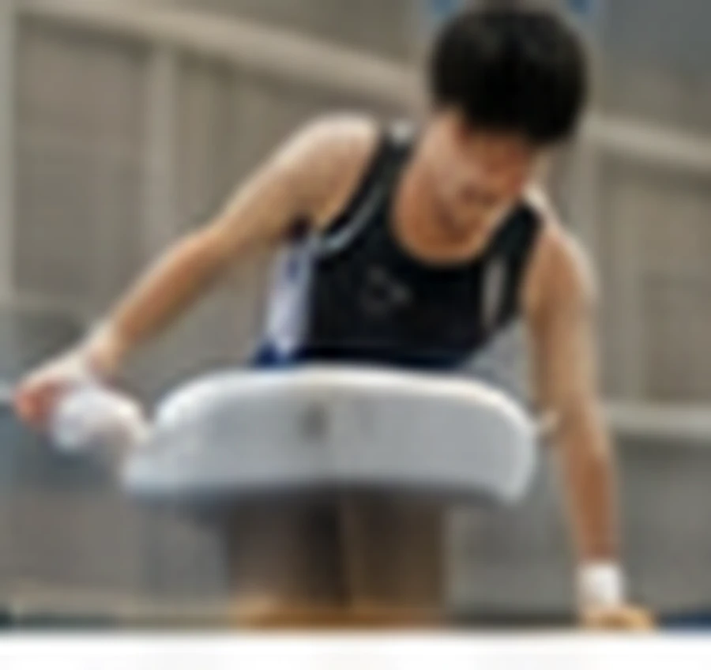
新しい技への挑戦
新しく挑戦している伸身トカチェフについて、現在の課題を書きました。
09メディアキット
10SNS
11お問い合わせ
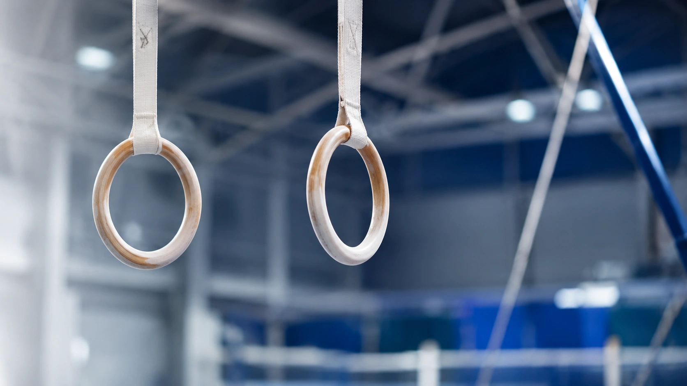